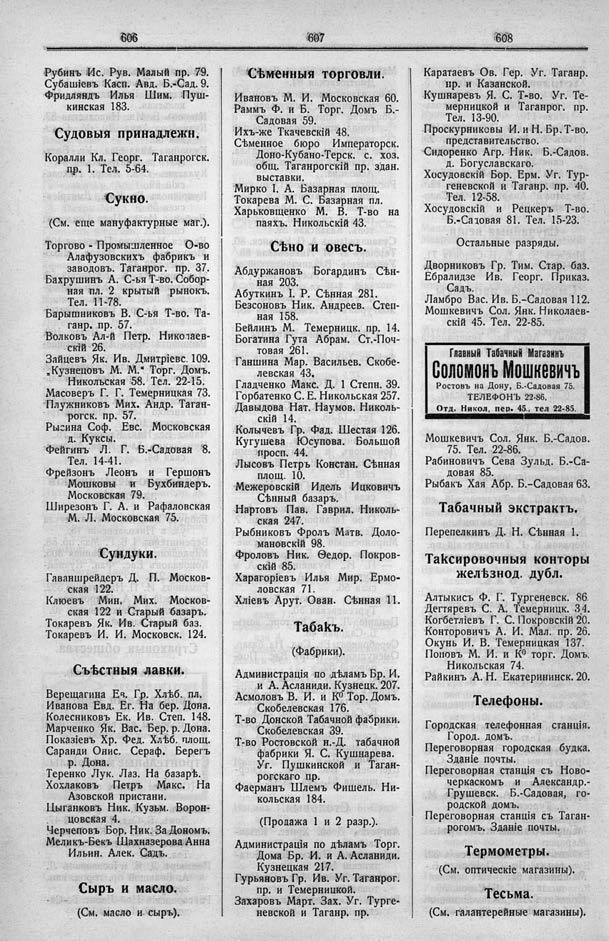

Лист источника 336
Скан

Распознанный текст
606
Рубинъ Ис. Рув. Малый пр. 79.
Субашіевъ Касп. Авд. Б.-Сад. 9.
Фридляндъ Илья Шим. Пуш-
кинская 183.
Судовыя принадлежн.
Коралли Кл. Георг. Таганрогск.
пр. 1. Тел. 5-64.
Сукно.
(См. еще мануфактурные маг.).
Торгово - Промышленное О-во
Алафузовскихъ фабрикъ и
заводовъ. Таганрог. пр. 37.
Бахрушинъ А. С-ья Т-во. Собор-
ная пл. 2 крытый рынокъ.
Тел. 11-78.
Барышниковъ В. С-ья Т-во. Та-
ганр. пр. 57.
Волковъ Ал-й Петр. Николаев-
скій 26.
Зайцевъ Як. Ив. Дмитріевс. 109.
„Кузнецовъ М. М.“ Торг. Домъ.
Никольская 58. Тел. 22-15.
Масоверъ Г. Г. Темерницкая 73.
Плужниковъ Мих. Андр. Таган-
рогск. пр. 57.
Рысина Соф. Евс. Московская
д. Куксы.
Фейгинъ Л. Г. Б.-Садовая 8.
Тел. 14-41.
Фрейзонъ Леонъ и Гершонъ
Мошковы и Бухбиндеръ.
Московская 79.
Ширезонъ Г. А. и Рафаловская
М. Л. Московская 75.
Сундуки.
Гаваншрейдеръ Д. П. Москов-
ская 122.
Клюевъ Мин. Мих. Москов-
ская 122 и Старый базаръ.
Токаревъ Як. Ив. Старый баз.
Токаревъ И. И. Московск. 124.
Съѣстныя лавки.
Верещагина Ев. Гр. Хлѣб. пл.
Иванова Евд. Ег. На бер. Дона.
Колесниковъ Ек. Ив. Степ. 148.
Марченко Як. Вас. Бер. р. Дона.
Показіевъ Хр. Фед. Хлѣб. площ.
Саранди Онис. Сераф. Берегъ
р. Дона.
Теренко Лук. Лаз. На базарѣ.
Хохлаковъ Петръ Макс. На
Азовской пристани.
Цыганковъ Ник. Кузьм. Ворон-
цовская 4.
Черчеповъ Бор. Ник. За Дономъ.
Меликъ-Бекъ Шахназерова Анна
Ильин. Алек. Садъ.
Сыръ и масло.
(См. масло и сыръ).
607
Сѣменныя торговли.
Ивановъ М. И. Московская 60.
Раммъ Ф. и Б. Торг. Домъ Б.-
Садовая 59.
Ихъ-же Ткачевскій 48.
Сѣменное бюро Императорск.
Доно-Кубано-Терск. с. хоз.
общ. Таганрогскій пр. здан.
выставки.
Мирко І. А. Базарная площ.
Токарева М. С. Базарная пл.
Харьковщенко М. В. Т-во на
паяхъ. Никольскій 43.
Сѣно и овесъ.
Абдуржановъ Богардинъ Сѣн-
ная 203.
Абуткинъ І. Р. Сѣнная 281.
Безсоновъ Ник. Андреев. Степ-
ная 158.
Бейлинъ М. Темерницк. пр. 14.
Богатина Гута Абрам. Ст.-Поч-
товая 261.
Ганшина Мар. Васильев. Скобе-
левская 43.
Гладченко Макс. Д. 1 Степн. 39.
Горбатенко С. Е. Никольская 257.
Давыдова Нат. Наумов. Николь-
скій 14.
Колычевъ Гр. Фад. Шестая 126.
Кугушева Юсупова. Большой
просп. 44.
Лысовъ Петръ Констан. Сѣнная
площ. 10.
Межеровскій Идель Ицковичъ
Сѣнный базаръ.
Нартовъ Пав. Гаврил. Николь-
ская 247.
Рыбниковъ Фролъ Матв. Доло-
мановскій 98.
Фроловъ Ник. Ѳеодор. Покров-
скій 85.
Харагоріевъ Илья Мир. Ермо-
ловская 71.
Хліевъ Арут. Ован. Сѣнная 11.
Табакъ.
(Фабрики).
Администрація по дѣламъ Бр. И.
и А. Асланиди. Кузнецк. 207.
Асмоловъ В. И. и К° Тор. Домъ.
Скобелевская 176.
Т-во Донской Табачной фабрики.
Скобелевская 39.
Т-во Ростовской н.-Д. табачной
фабрики Я. С. Кушнарева.
Уг. Пушкинской и Таган-
рогскаго пр.
Фаерманъ Шлемъ Фишель. Ни-
кольская 184.
(Продажа 1 и 2 разр.).
Администрація по дѣламъ Торг.
Дома Бр. И. и А. Асланиди.
Кузнецкая 217.
Гурьяновъ Гр. Ив. Уг. Таганрог.
пр. и Темерницкой.
Захаровъ Март. Зах. Уг. Турге-
невской и Таганр. пр.
608
Каратаевъ Ов. Гер. Уг. Таганр.
пр. и Казанской.
Кушнаревъ Я. С. Т-во. Уг. Те-
мерницкой и Таганрог. пр.
Тел. 13-90.
Проскурниковы И. и Н. Бр. Т-во.
представительство.
Сидоренко Агр. Ник. Б.-Садов.
д. Богуславскаго.
Хосудовскій Бор. Ерм. Уг. Тур-
геневской и Таганр. пр. 40.
Тел. 12-58.
Хосудовскій и Рецкеръ Т-во.
Б.-Садовая 81. Тел. 15-23.
Остальные разряды.
Дворниковъ Гр. Тим. Стар. баз.
Ебралидзе Ив. Георг. Приказ.
Садъ.
Ламбро Вас. Ив. Б.-Садовая 112.
Мошкевичъ Сол. Янк. Николаев-
скій 45. Тел. 22-85.
Главный Табачный Магазинъ
Соломонъ Мошкевичъ
Ростовъ на Дону, Б.-Садовая 75.
ТЕЛЕФОНЪ 22-86.
Отд. Никол. пер. 45., тел 22-85.
Мошкевичъ Сол. Янк. Б.-Садов.
75. Тел. 22-86.
Рабиновичъ Сева Зульд. Б.-Са-
довая 85.
Рыбакъ Хая Абр. Б.-Садовая 63.
Табачный экстрактъ.
Перепелкинъ Д. Н. Сѣнная 1.
Таксировочныя конторы
желѣзнод. дубл.
Алтыкисъ Ф. Г. Тургеневск. 86.
Дегтяревъ С. А. Темерницк. 34.
Когбетліевъ Г. С. Покровскій 20.
Конторовичъ А. И. Мал. пр. 26.
Окунь И. В. Темерницкая 137.
Поповъ М. И. и К° торг. Домъ.
Никольская 74.
Райкинъ А. Н. Екатерининск. 20.
Телефоны.
Городская телефонная станція.
Город. домъ.
Переговорная городская будка.
Зданіе почты.
Переговорная станція съ Ново-
черкаскомъ и Александр.-
Грушевск. Б.-Садовая, го-
родской домъ.
Переговорная станція съ Таган-
рогомъ. Зданіе почты.
Термометры.
(См. оптическіе магазины).
Тесьма.
(См. галантерейные магазины).